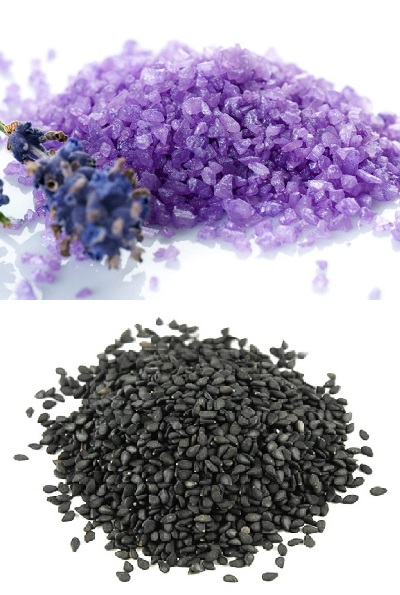

A fűszerek általában növényekből nyert anyagok, melyek erős aromájú hatóanyagait használhatjuk fel az ételek ízesítéséhez, tartósításához. Általában igen kevés mennyiségben szükséges őket az ételhez adnunk, az íz és az illat megőrzése, módosítása céljából. Fűszerként a növény különböző részeit használhatjuk fel: gyökerét (gyömbér), kérgét (fahéj), levelét (bazsalikom), termését (ánizs), virágát (szegfűszeg) vagy magját (mustár). A fűszereket gyakran használják illatszerek, parfümök és gyógyszerek előállításához is.
A fűszerek igazi hazája India, ott használják a legtöbb és legerősebb fűszereket az ételek készítéséhez még napjainkban is. Számos Európában őshonos fűszernövényt is megemlíthetünk, a legrégebben használt európai fűszerek a kömény, a kakukkfű, az ánizs és a zsálya, melyeket a magyar konyha is gyakran használ.
A só egyike az alapvető fűszereknek, és egyben az egyik legősibb ismert ízesítő anyag. Az ételíz és az élelmiszer tartósításának szempontjából is fontos szerepet játszik.
A bors jellegzetes csípős és fűszeres ízzel rendelkezik, amelyet az ételek ízének kiemelésére és mélyítésére használnak. Gyakran használják konyháinkban, szinte minden étel fűszerezésére, beleértve húsokat, tenger gyümölcseit, zöldségeket és szószokat is.
A pirospaprika magyar gasztronómia jellegzetes fűszere, de számos más országban is használják. Világhírűvé vált a kalocsai és a szegedi fűszerpaprika-őrlemény.
Az anardana nem más, mint egy a gránátalma magvaiból készülő, melaszosan édeskés ízvilággal rendelkező fűszer. A perzsa és az indiai konyha egy rendkívül fontos eleme, amely kitűnően illeszkedik mind a zöldségekhez, mind a gyümölcsökhöz és diófélékhez, de csokoládéban, szószokban és húsok számára is igazán különleges ízvilágot kölcsönöz. Használható akár egészben is, de darabos, vagy finomra darált változatban is szokták alkalmazni.
Nevéhez hűen a levendulás cukor nem más, mint a levendula és a cukor keveréke. Fantasztikusan alkalmazható torták, sütemények és kenyerek tésztájához.
A fekete szezámmag az ételeknek diós ízvilágot kölcsönöz, valamint a látványt is igazán gazdaggá teszi. Gyakran használatos japán és kínai ételek elkészítéséhez: tofu, saláták, mártások és desszertek is készülnek vele. A japánok szezámsót is készítenek belőle, amely pörkölt magvak és só keverékéből tevődik össze.
Az annatto nem más, mint az orleánfa magjaiból és gyümölcsének piros húsából készített fűszer. Mivel színe erős narancsvörös, ételszínezékként is használatos. Édeskés ízvilága a paprika és a szerecsendió között helyezhető el. Elsősorban közép- és délamerikai ételek elkészítésére használják, de mexikói ételekben is gyakran fellelhető. Azoknál, akik érzékenyek a színezékekre, érdemes óvatosnak lenni, ugyanis allergiás reakciót okozhat